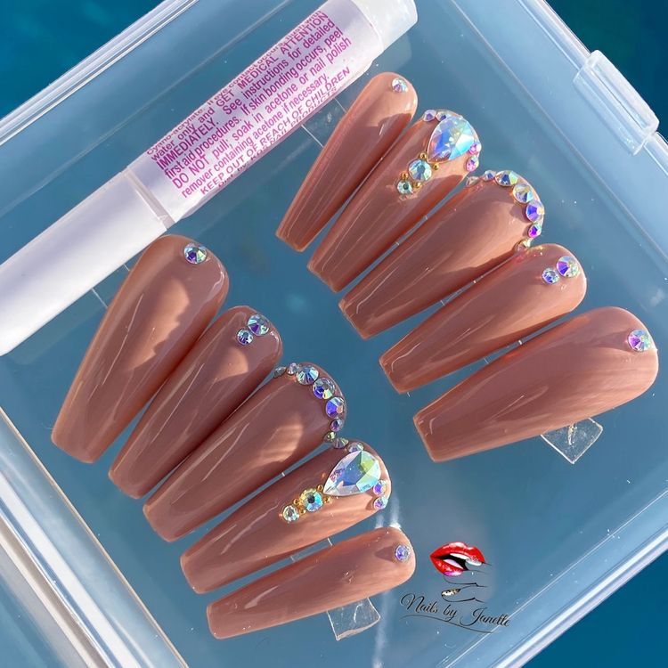

Las Press On son uñas postizas premium súper resistentes, hechas a medida, con la forma, largo y diseño que prefieras! Cada vez son más las chicas que están optando por esta técnica por su fácil y rápida colocación, ya que no tienen que pasar dos, tres y hasta cuatro horas en el salón hasta que terminen las uñas, y eso ahorra muchísimo tiempo que quizás muchas no tienen. Son ideales para utilizar en eventos o fines de semana, ya que pueden retirarlas cuando quieran y volver a guardarlas! Todos los sets de Press On se envían con un kit que incluye todo lo necesario para la aplicación: Nail glue, palito de naranjo, wipe para limpiar las uñas naturales antes de la aplicación y una lima. Son de fácil colocación, 100% personalizadas, Reutilizables y coleccionables.
¿Que son las Press On?
